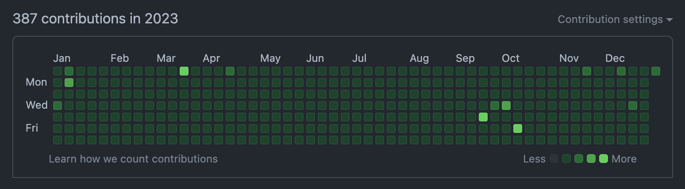

TIL 39: 2023년 회고
TL;DR
- GitHub 연속 일일 커밋은
1327일째 진행중이다. 🌱 - 작년은 설계에 깊이를 더한 iOS 개발자가 조금 된 것 같다. 😎
- 2024년에는 개발 영역뿐만 아니라 비개발 영역에도 깊이를 더해보자. 💪
Today I Committed
 GitHub Contributions in 2023
2023년에도 일일 커밋을 이어가면서 365일을 모두 채워서, 연속 1327일째를 달성했다. 🥳
2023년에는 블로그 글을 하나도 적지 못해 문제 풀이나 일부 코드를 올리는 것으로 잔디를 채웠다.
여러가지 일로 바쁜 한 해여서 그랬는지, 글에 신경을 쓰지 못한 채 순식간에 시간이 흘러 어느새 2024년이 되었다.
그래도 3년 이상 일일 커밋을 하니, 이제 완전히 습관이 돼서 안 올리는 날은 어색한 기분이 들고 커밋을 올렸는지 확인하는 습관도 생겼는데, 나쁘지 않은 습관인 것 같다.
2024년에는 문제 풀이뿐만 아니라 블로그 글로도 잔디를 채워보고 개인적인 프로젝트를 통해서도 잔디를 심어야겠다! 👊
Today I Worked
매년 비슷한 느낌이지만, 작년에도 일을 하다보니 시간이 너무 빠르게 흘러 어느새 2024년이 되었다.
꾸준히 담당하던 유지보수를 이슈없이 잘 처리했으며, 개발 지원도 나가서 내가 담당한 역할에 맞게 적절하게 도움을 준 것 같아 뿌듯했다.
그리고 재작년에는 신경을 쓰지 못했던 접근성(Accessibility) 이슈를 전면 개편하며 더 이상 이슈가 없도록 처리했고, 연말에 접근성 관련해서 좋은 피드백도 받았다.
다만, 신체적으로 불편한 사람들에 대한 편의를 제공하는 기능이기 때문에 일반적인 성과에 비해 주목받지 못하는 느낌이 들어 조금 아쉬움이 들었다. 😅
연말쯤에는 큰 프로젝트에 투입이 되었지만, 연중에는 그런 일을 제대로 맡지 못한 것이 개인적으로 조금 아쉬웠다.
일을 꼼꼼하게 처리하는 스타일이라 버그없이 이슈를 처리하는 것이 나의 특기라고 생각하는데, 내 특기를 발휘할 기회가 없었던 것 같아서 아쉬움이 남았다.
그래도 연말에 큰 프로젝트에 처음부터 투입이 돼서 올해 본격적으로 진행할 예정인데, 이때 완성도 높게 프로젝트를 마무리해서 내 진가를 보여주고 싶다. 😎
올해는 작년에 맡은 큰 프로젝트도 잘 마무리하고, 그 이후에 여러 부분에서도 활약해서 많은 사람들이 내 진가를 알 수 있도록 노력해야겠다! 🧐
Today I Learned
설계
작년에 베스트 프랙티스가 무엇인지 정립하고자 고민을 계속 했었다.
개인적인 생각으로, 최소한의 구조인 MVC는 아주 작은 기능만 하는 모듈적인 부분이나 예제 수준에서는 빠르게 만들 수 있어서 적절하지만,
유지보수를 할 때는 이슈가 어디에서 발생하는지 찾기 힘든 불편함을 느꼈다.
반대로, MVVM은 어느 정도의 유지보수도 고려한 적당한 정도의 구조라고 생각을 했고 대부분을 그렇게 구성하자,
유지보수 할 때 이슈 파악이 원활하고 수정하기도 쉬워 효율적이라고 느꼈다.
그래서, 지금까지는 기본적으로 MVVM 기반으로 개발을 진행했는데, 아직 실무로 적용할 일이 없어서 그렇지 더 체계적인 구조도 필요할 것이라 생각한다.
개인적으로 여러 구조로 설계를 해보며 장단점도 느끼고 보니, 당연한 얘기지만 만능 구조는 없다는 것을 느꼈다.
단순한 구조만 고집하면 개발은 빨라지지만 이후 유지보수가 힘들어지고, 복잡하지만 체계적인 구조만 고집하면 유지보수가 편해지지만 불필요한 리소스가 과하게 필요할 수 있다.
그래서 상황에 따라 적절하게 구조를 선택해 설계를 해야 가장 효율적으로 개발을 할 수 있는데, 그것을 위해 다양한 구조를 알고 있는 것만으로도 큰 도움이 되는 것 같다.
설계에 대한 학습은 끝이 없으므로 앞으로도 계속 공부해가며, 어떤 상황에 어떻게 설계를 할 지 결정할 수 있는 눈을 꾸준히 키워야겠다. 🤓
접근성(Accessibility)
작년에 업무로 접근성(Accessibility) 이슈를 전면 개편하며, 신체적으로 불편한 사람들에게 편의를 제공했다는 생각에 뿌듯한 마음이 가득했다.
접근성 팀과 소통하며 실제로 접근성 기능을 사용하는 사람들의 입장도 알게 되었고, 그것을 개선하며 어떻게 하면 그 분들이 더 편하게 사용할 수 있을지 고민할 수 있는 시간이었다.
새로운 기술 스택을 공부하는 재미도 있었지만, 마음처럼 동작하지 않는 버그들도 많아서 스트레스도 함께인 날들이었다.
그래도 많은 부분을 개선하며 잘 동작하는 것을 봤을 때의 뿌듯함이 더 커서 다행이었다. 😊
그렇게 전면 개편한 이후로는 새로운 기능을 개발할 때마다 항상 접근성 기능을 고려해서 개발을 진행하고 있다.
접근성 기능을 고려하다보니 다른 관점에서도 생각을 해보게 되고, 구조에 대해 더 고민할 수 있어 재밌다.
어찌보면 당연하게 했어야 하는 것이지만 우선순위에 밀려 관심을 가질 기회가 없었던 것 같다.
우선순위에 밀리고 밀리다가 작년에라도 개편을 진행해서 다행이라고 생각한다.
앞으로도 접근성에 관심을 가지며, 개발할 때 접근성 기능을 놓치지 않고 포함시키도록 해야겠다. 🧐
Tomorrow I will Learn
글쓰기
작년에는 재작년보다 더 심각하게 글을 1개도 올리지 못했다.
개인적으로 다른 것에 신경을 많이 쓰느냐 글쓰기에는 관심을 가지기 힘들었다.
올해는 글쓰기 관련 책도 읽어가며, 글쓰기에 대한 부담을 줄여 마음 편하게 쓸 수 있는 방법을 터득해가야겠다.
부담없이 글을 쓰다보면, 일일 커밋처럼 습관이 되는 날이 오지 않을까 싶다.
(올해도 매번하는 다짐이지만) 올해는 부담없이 글을 쓰도록 노력해야겠다. 🙄
모듈화
설계에 대해 고민을 하다보면 꼭 나오는 부분이 모듈화이다.
알고는 있지만 적용할 수 없었던 것이, 기존 레거시 코드는 많은 개발자의 코드가 엮여 있고 유지보수도 꾸준히 이뤄지고 있어서 일정을 산정하며 적용하기에는 무리가 있었다.
그런데 작년에 신규 앱을 만드는 프로젝트에 참여하면서 모듈화를 적용할 기회가 생겼다.
그렇게 신규 앱 프로젝트의 초기 설계에 투입되어, 모듈화를 어필하고 적용했지만 의견 차이가 있어서 원하는 수준으로 적용하지는 못했다.
아무래도 서로 관심 있는 지식이나 개인적인 의견 등이 다르니, 적당하게 합의해서 모듈화를 할 수 밖에 없었다.
개인적으로는 라이브러리 수준으로 나눈 것 밖에 안 돼서, 제대로 모듈화를 한 것 같지 않았다.
그래서 올해에는 모듈화에 대해 더 심도있게 공부를 해서, 원하는 수준의 모듈화를 적용할 수 있도록 팀원들을 설득해보려 한다.
올해에는 모듈화에 대해 더 전문가가 돼서, 설계에 강점을 플러스 해야겠다! 🔥
그 외
그 동안 주로 사적인 일과 회사 일에만 신경을 쓰다보니, 평소 좋아하던 공부에 많이 집중하지 못한 것 같다.
개발적인 요소 말고도 비개발적인 요소에 대해서도 공부를 할 것이 무궁무진하다고 생각이 들어, 올해에는 비개발 영역에 대해서도 공부 시간을 투자할 생각이다.
특히 요즘에는 인문학, 디자인, 기획 등에 대해서 특히 관심이 있는 만큼 그 부분들에 대한 투자를 더 많이 해야겠다. 🤓
Tomorrow I will Become
작년에는 확실히 재작년보다 설계에 깊이를 더한 iOS 개발자가 된 것 같은 느낌이 들었다.
기존 코드를 리팩토링하거나 새로운 코드를 개발할 때 더 탄탄한 설계를 하면서 버그와 이슈 개수가 손에 꼽았다.
물론, 더 큰 규모의 프로젝트를 접할 기회가 없었어서 아쉬움이 있지만, 올해는 신규 앱 프로젝트에도 참여하는 만큼 재밌게 성장할 수 있는 기회가 될 것 같다.
하지만, 개발자로써 개발적인 성장도 좋지만 비개발적인 부분도 중요하기 때문에 그 영역에서도 더 성장할 기회가 있으면 좋겠다는 생각이 든다.
그래서 2024년에는 개발 영역뿐만 아니라 비개발 영역에서도 성장하는 기회가 되도록 달려야겠다! 💪